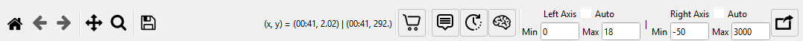
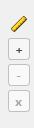

Every chart in Snapshot Decoder has a toolbar across the top and a small Y-axis ruler panel on the left edge. Together they give you full control over navigation, measurement, export, and axis scaling.
The toolbar runs across the top of every chart (and pop-out chart window).

From left to right the buttons and controls are:
| Button | Name | Description |
|---|---|---|
| Home | Home | Resets the chart to the original view after you have panned or zoomed. Returns both axes to their full auto-scaled range. |
| ← | Back | Steps back through the view history (previous zoom or pan positions). |
| → | Forward | Steps forward through the view history after using Back. |
| Cross arrows | Pan | Click and drag the chart to pan in any direction. Right-click and drag to zoom along a single axis. This is a toggle – click again to deactivate. |
| Magnifying glass | Zoom | Click and drag a rectangle on the chart to zoom into that region. Right-click and drag to zoom out. This is a toggle – click again to deactivate. |
| Floppy disk | Save as PDF | Exports the current chart to a PDF file. The PDF includes chain-of-custody metadata (file name, date/time, engine hours) and a Snapshot Decoder version watermark. |
| Coordinates display | Shows the current cursor position as (x, y) values.
When two axes are active it shows both the left and right Y values,
e.g. (00:41, 2.02) | (00:41, 292.). |
|
| Cart icon | Add to Chart Cart | Adds a snapshot of the current chart to the Chart Cart dock panel. The cart collects charts for batch export to a multi-page PDF. |
| Value popup icon | Value Display | Toggle button. When active (highlighted blue), hovering over a data line shows a tooltip with the exact PID value at that point. Uses mplcursors for interactive data annotation. |
| Time icon | Time Slider / Cursor | Toggle button. When active, a vertical time cursor and a slider bar appear below the chart. Drag the slider or the cursor line to scrub through time. The exact time position is shown on the X-axis. |
| Brain icon | Quick IQ | Opens the Quick IQ panel, which provides context-aware analysis tips for the currently displayed chart. |
Immediately after the chart buttons, the toolbar includes inline Left Axis and Right Axis range controls:
| Control | Description |
|---|---|
| Auto checkbox | When checked, the axis automatically scales to fit the data. Uncheck it to type custom Min and Max values. |
| Min / Max fields | Enter numeric values to lock the axis range. Changes are applied live as soon as you press Tab or Enter. Leave both axes on Auto to let the chart scale itself. |
At the far right of the toolbar is the Pop-out button (expand-in-new-window icon). It opens the current chart in a separate resizable window with its own full toolbar, rulers, and time slider. This is useful for side-by-side comparison or for maximizing chart area on a second monitor. The pop-out button is not shown when the chart is already in a pop-out window.
A small control strip sits on the left edge of the chart area, beside the Y-axis. It lets you add horizontal reference lines (rulers) to the chart for quick visual comparison against specific values.

From top to bottom the controls are:
| Button | Name | Description |
|---|---|---|
| Ruler icon | Ruler indicator | Visual indicator showing these controls are for Y-axis rulers. |
| + | Add Ruler | Adds a horizontal ruler line at the midpoint of the current left Y-axis range. You can add multiple rulers. |
| − | Remove Ruler | Removes the currently selected ruler. If no ruler is selected, removes the last one that was added. |
| x | Clear All Rulers | Removes all ruler lines from the chart at once. |